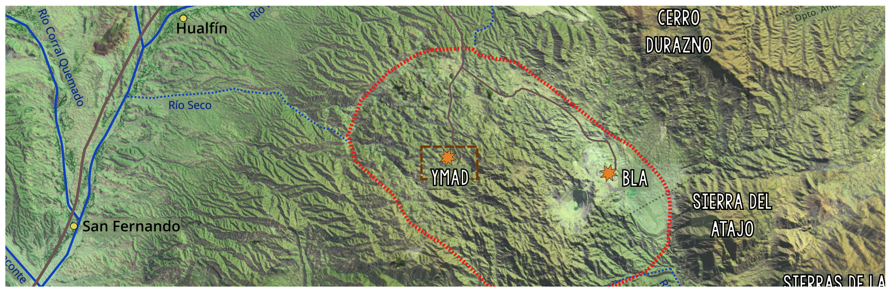
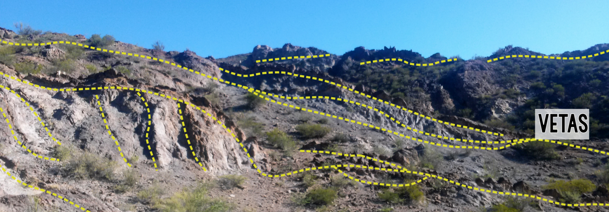
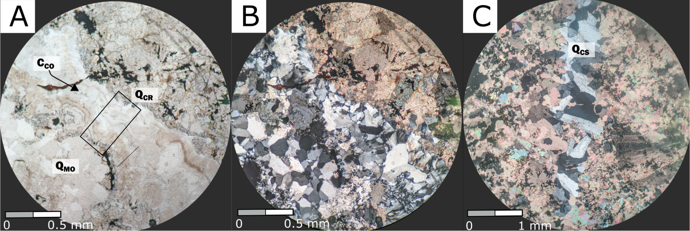

Geologic, Geochemical and Structural characterization of the Los Viscos Vein in the Farallón Negro Volcanic Complex ¶
2019-2020 - Universidad de Buenos Aires, Argentina ¶

As part of my undergraduate research I worked along Carolina Mendez and Diana Irene Mutti in the a complete characterization of a SW portion of Los Viscos Vein in the Farallon Negro Volcanic Complex.

The Farallon Negro Volcanic Complex corresponds to an ld

presents a textural analysis of the hydrothermal silica present in a mineralized portion of the Los Viscos Vein, in the Farallón Negro Volcanic Complex, Catamarca, Argentina. This allowed to make new contributions about the genesis of the of the intermediate sulphidation, Au-rich epithermal system. The vein is composed primarily of quartz, carbonates and Mn-oxides, with secondary silver sulfosalt minerals such as acanthite- argentite, proustite, low sulfides, pyrite, and native elements, gold and silver. The complex spatial relationships between the different silica textures reflect that the current exposition level is within the paleo-zone of boiling upflow.

Selected Publications:
- Ninni, M.M., and Mendez C.C. (2020). Hydrothermal Quartz Textural Analysis of Los Viscos Vein in the Farallón Negro Volcanic Complex, Catamarca, Argentina. XII Congreso Argentino de Geologia Económica.
pdfRG - Ninni M.M. (2020). Geologic, Geochemical and Structural Characterization of the Los Viscos Vein in the Farallón Negro Volcanic Complex, Catamarca, Argentina. - Undergraduate Senior Thesis - Thesis directors: Dra. Diana Irene Mutti and Dra. Carolina Carmen Mendez. Ore Deposits and Economical Geology Department, UBA.
pdfRG